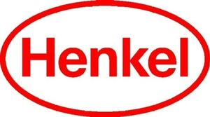

Trade Mark Journal No.2025/028 11 July 2025
WO0000001860640 (1,2,3,4,5,9,16,17,19,37,41,42)
Office of origin: Germany
Date of International Registration:3 February 2025
Date of designation in the UK:
3 February 2025

The mark contains the colour red.
International priority date claimed: 9 August 2024
(European Union Intellectual Property Office (EUIPO))
(019066162)
- Class 1
- Chemicals for use in industry, science and photography, as well as in agriculture, horticulture and forestry; unprocessed artificial resins; fire extinguishing and fire prevention compositions; soldering preparations; substances for tanning animal skins and hides; adhesives for use in industry; putties and other paste fillers; compost, manures, fertilizers; biological preparations for use in industry and science; degreasing preparations for use in manufacturing processes; cleaning solvents for use in manufacturing processes; chemical cleaning agents for use in industrial manufacturing processes; soldering pastes; soldering chemicals; detergents for cleaning use (part of manufacturing operations); desiccants for absorbing moisture; raw materials for washing and cleaning preparations; starch for industrial purposes; unprocessed plastics; tempering preparations; solder fluxes; adhesive removers.
- Class 2
- Paints, varnishes, lacquers; preservatives against rust and against deterioration of wood; colorants, dyes; inks for printing, marking and engraving; raw natural resins; metals in foil and powder form for use in painting, decorating, printing and art; anti-corrosive preparations.
- Class 3
- Non-medicated cosmetics and toiletry preparations; non-medicated dentifrices; perfumery, essential oils; bleaching preparations and other substances for laundry use; cleaning, polishing, scouring and abrasive preparations; preparations for conditioning, cleaning, tinting, dyeing, bleaching, fixing and waving of hair; skincare preparations and substances; creams and lotions; cleaning preparations; polishing preparations; scouring preparations; abrasive preparations; adhesive removers for cosmetic purposes; degreasers, other than for use in manufacturing process.
- Class 4
- Industrial oils; industrial grease; industrial wax; lubricants; dust absorbing, wetting and binding compositions; fuels and illuminants; wicks for candles for lighting.
- Class 5
- Pharmaceuticals; medical preparations; veterinary preparations; sanitary preparations for medical purposes; dietetic food and substances adapted for medical or veterinary use, food for babies; dietary supplements for human beings and animals; plasters, materials for dressings; material for stopping teeth, dental wax; disinfectants; preparations for destroying vermin; fungicides; herbicides; air freshening preparations; agents for deodorizing ambient air, deodorizing agents, not to be used by human beings or animals; agents for neutralizing and cleaning ambient air; chemical preparations for cleaning and refreshing ambient air; insecticides, insect repellents, insect attractants; agents for disruption or inhibition of mating of insects; parasiticides and antiparasitic preparations.
- Class 9
- Scientific, research, navigation, surveying, photographic, cinematographic, audiovisual, optical, weighing, measuring, signaling, detecting, testing, inspecting, life-saving and teaching apparatus and instruments; apparatus and instruments for conducting, switching, transforming, accumulating, regulating or controlling the distribution or use of electricity; apparatus and instruments for recording, transmitting, reproducing or processing sound, images or data; recorded and downloadable media, computer software, blank digital or analogue recording and storage media; mechanisms for coin-operated apparatus; cash registers, calculating devices; computers and computer peripheral devices; diving suits, divers' masks, ear plugs for divers, nose clips for divers and swimmers, gloves for divers, breathing apparatus for underwater swimming; fire-extinguishing apparatus; electrical dosage dispensers and application equipment especially for adhesives and coatings and for removing old paints and coatings; online software in the nature of downloadable computer software for use in three dimensional scanning and printing of objects; printing and imaging software, namely, computer software for the three-dimensional scanning of objects, editing of such images, and operating and managing three dimensional printers that print such images; imaging hardware, namely, three dimensional (3D) scanners and three-dimensional (3D) capture platforms; computer software that provides web-based access to applications and services for print management; downloadable and recorded virtual goods for use online and in online virtual environments, namely software in relation to adhesive products, perfumery products, toiletry articles, cosmetic products, make-up, skincare products, preparations for body care and facial care products, haircare products and hair coloring products, pharmaceutical preparations, sanitary preparations, dietary supplements for human beings, plasters and material for dressing, disinfectants; downloadable digital files authenticated by non-fungible tokens (NFTs), namely in relation to adhesive products, perfumery products, toiletry articles, cosmetic products, make-up, skincare products, preparations for body care and facial care products, haircare products and hair coloring products, pharmaceutical preparations, sanitary preparations, dietary supplements for human beings, plasters and material for dressing, disinfectants; downloadable games and interactive entertainment software for use with a global computer network, wireless networks and electronic apparatus of all kinds; downloadable software for access to social networks and interaction with online communities; downloadable software for access to and streaming multimedia entertainment content; downloadable software for providing access to an online virtual environment; downloadable software for the creation, production and modification of digital animated and non-animated characters and designs, avatars, digital chroma keying and skins for access and use in online environments, virtual online environments and extended virtual reality environments; downloadable multimedia files containing artwork, text, audio, and video relating to adhesive products, perfumery products, toiletry articles, cosmetic products, make-up, skincare products, preparations for body care and facial care products, haircare products and hair coloring products, pharmaceutical preparations, sanitary preparations, dietary supplements for human beings, plasters and material for dressing, disinfectants; near field communication tokens; security tokens (encryption devices); downloadable mobile applications for ordering products in relation to adhesive products, perfumery products, toiletry articles, cosmetic products, make-up, skin-care products, preparations for body care and facial care products, products for hair care and hair coloring products, pharmaceutical preparations, sanitary preparations, dietary supplements for human beings, plasters and material for dressing, disinfectants; near field communication tags for interacting with mobile applications to obtain information in relation to adhesive products, perfumery products, toiletry articles, cosmetic products, make-up, skincare products, preparations for body care and facial care products, haircare products and hair coloring products, pharmaceutical preparations, sanitary preparations, dietary supplements for human beings, plasters and material for dressing, disinfectants; near field communication tags for product promotion and authentication in relation to adhesive products, perfumery products, toiletry articles, cosmetic products, make-up, skincare products, preparations for body care and facial care products, haircare products and hair coloring products, pharmaceutical preparations, sanitary preparations, dietary supplements for human beings, plasters and material for dressing, disinfectants.
- Class 16
- Paper and cardboard; printed matter; bookbinding material; photographs; office requisites, except furniture; adhesives for stationery or household purposes; drawing materials; materials for artists; paintbrushes; instructional and teaching materials; plastic sheets for wrapping and packaging; plastic films for wrapping and packaging; plastic bags for wrapping and packaging; printers' type; printing blocks; stationery.
- Class 17
- Unprocessed and semi-processed rubber, gutta-percha, gum, asbestos, mica and substitutes for all these materials; plastics and resins in extruded form for use in manufacture; packing, stopping and insulating materials; flexible pipes, tubes and hoses, not of metal; insulating tapes, adhesive tapes, strips, bands and films; seals, sealants and fillers; sealing membranes (non-metallic); membranes and semi-processed synthetic filtering materials of plastic.
- Class 19
- Materials, not of metal, for building and construction; rigid pipes, not of metal, for building; asphalt, pitch, tar and bitumen; transportable buildings, not of metal; monuments, not of metal; roofing membrane, bituminous sealing membranes, bituminous coatings for roofing; plaster; cement plaster; mortar, concrete, cement, asphalt, pitch, bitumen, screed, mastics, coatings (building material), grouting material, levelling compound.
- Class 37
- Construction services; installation services; mining extraction, oil and gas drilling; dry cleaning; cleaning of clothing; washing, cleaning and disinfecting of clothing, carpets, upholstering, curtains, blankets, decorative fabrics, leather and textiles of all kinds; washing and linen ironing; laundry care.
- Class 41
- Education; providing of training; entertainment; sporting and cultural activities; providing virtual reality game services through an interactive website; entertainment services, namely providing of online, non-downloadable virtual goods for use in virtual environments in connection with adhesive products, sealing products, perfumery products, toiletry articles, cosmetic products, make-up, skincare products, preparations for body care and facial care products, products for hair care and hair coloring products, pharmaceutical preparations, sanitary preparations; entertainment services, namely providing of online, non-downloadable virtual goods for use in virtual environments in connection with adhesive products, sealing products, perfumery products, toiletry articles, cosmetic products, make-up, skincare products, preparations for body care and facial care products, products for hair care and hair coloring products, pharmaceutical preparations, sanitary preparations, dietary supplements for human beings, plasters and material for dressing, disinfectants, digital animated and non-animated characters and designs, digital avatars, digital skins and digital clothing; virtual reality and interactive game services accessible online from a global computer network, wireless network and electronic apparatus of all kinds; entertainment services, namely services providing virtual environments in which users may interact for recreational, leisure or entertainment purposes; entertainment services, namely services providing an online environment enabling streaming of entertainment content and live broadcasting of entertainment events; entertainment services, in relation to arranging, installation and setting up of virtual shows and social entertainment events; organization of competitions.
- Class 42
- Scientific and technological services and research and design relating thereto; industrial analysis, industrial research and industrial design services; quality control and authentication services; design and development of computer hardware and software; cosmetic research consultancy with regard to the design of homepages and Internet pages; providing platforms on the Internet; software design for others; design and development of software for providing online advertising and/or advertising on the Internet; design and development of computer hardware and software for online services for providing or exchanging information via the Internet, or for operating search engines or online portals with information provided via the Internet, in particular text data, image data, audio data or video data; design and development of computer hardware and software for operating telecommunications services and digital services, in particular online services for communications via the Internet by means of text data, image data, audio data, speech data and/or video data; design, maintenance and updating of a telecommunications network search engine; greeting card services, anti-spam and anti-virus services by means of creating, maintenance and adaptation of software; hosting of Internet sites; rental of storage space on the Internet; rental and maintenance of memory space for use as websites for others (hosting); rental of webservers; providing of memory space on the Internet; providing memory capacity for external use (web-housing); providing web space (web-hosting); server administration; rental of web servers; rental of storage space on web servers (webspace); hosting web sites; electronic data back-up; technological services in relation to the implementation of Internet domain registration; designing and developing webpages on the Internet; leasing, hire and rental of computers, computer systems, computer programs and computer software; design and development of data processing programs; security services for protection against illegal network access; recovery of computer data; rental of spaces in computer centres for webservers for external use (web housing); testing, authentication and quality control; Blockchain as a Service [BaaS]; hosting services; software as a service [SaaS]; and rental of software; hosting of digital content, namely, on-line journals and blogs.
Henkel AG & Co. KGaA